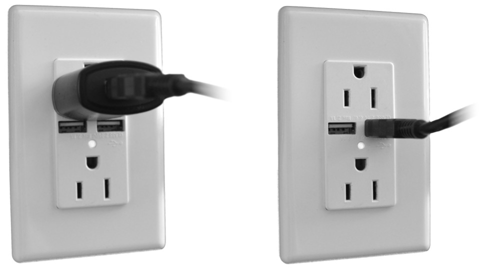

An Owl-in-One is a versatile, standalone wireless transceiver that provides plug-and-play infrastructure coverage. This tutorial outlines the three steps to deploying OiOs to cover a space, namely:
The initial step is planning where to deploy the infrastructure within the space. This is typically accomplished using floorplans. Based on the application, infrastructure can be placed to maximise zone coverage and/or to provide granularity at specific points of interest (POIs).
| Strategy | Description |
|---|---|
| Zone coverage | Infrastructure is placed at regular spacing intervals, often in a grid pattern, providing complete and uniform coverage of the space. To facilitate deployment, it is common to place infrastructure on regular structural features such as support columns. Typical spacing is every 7m or one OiO for every 50m2. |
| Points of Interest | Infrastructure is placed at specific POIs where proximity or granular location is important. POI location accuracy is best within 2-3m range. |
Planning around pluggability
For OiO that will be powered by AC mains and/or connected to existing Ethernet outlets, it is recommended to first survey the space and then plan the deployment opportunistically around the placement and availability of these resources.
| Consideration | Details |
|---|---|
| Mounting height | OiO should be mounted at a height similar to that of the devices they are intended to detect — this is especially critical for POIs. For zone coverage, it is advisable to mount slightly higher to maximise line-of-sight over the spacing interval radius. For standard 3m ceilings, mounting at any height, including above a false-ceiling, is generally acceptable. |
| Line-of-sight | OiO should be mounted away from metal and from massive obstructions such as concrete (unless the latter are to intentionally limit coverage of specific areas). Line-of-sight should be maximised throughout the target coverage area. When mounting on support columns, ensure at least a few centimetres spacing from the metal/concrete. |
| Physical access | OiO should be mounted such that they are physically accessible for maintenance or inspection should the need arise. |
Once the infrastructure placement is complete, the next step is to power the individual OiO units. The OiO accepts power via its USB plug from any source providing the USB-standard 5V and at least 1.0A output.
| Configuration | Requirements |
|---|---|
| AC Mains | Connect the USB plug of the OiO to AC mains via the provided adapter or a standard third-party adapter. Accessible mains outlets and/or connected USB adapters are attractive sources of power for other devices: if an easily-accessible outlet is the only available option, take precautions to avoid power interruptions to the OiO! |
| USB Outlets | Connect the USB plug of the OiO directly to a USB outlet. Such outlets may be found combined with an AC mains socket, or on devices such as computers and displays, provided they meet the minimum USB power standard. Confirm that the selected outlet provides continuous power that is not interrupted by a switch or the power mode of the source device! |
| USB Batteries | Connect the USB plug of the OiO to the standard receptacle on the battery (often called a power bank). In this configuration the OiO will safely shutdown once the battery is exhausted. Some power banks require an intermediate step (ex: button press) before delivering power. Observe the requirements specific to the selected power bank to ensure expected results. |
The Owl-in-One conveniently supports both Ethernet (wired) connectivity and WiFi (wireless) connectivity.
Provide Ethernet connectivity simply by plugging the OiO's network cable into an Internet-connected DHCP-enabled switch or router. The OiO will automatically establish a connection.
The OiO ships with the following default configuration:
The OiO will automatically connect when in range of the WiFi network for which it is configured.
The WiFi settings can be reconfigured using a command-line tool on a computer running Windows, Mac or Linux that is connected to the OiO via USB. Click the button below for the instructions to install this tool for the Tessel 2 on which the OiO is based.
Test that the t2 command-line tool is successfully installed by opening a terminal or command prompt and entering t2. You should see the usage information for the tool displayed. The only command you will need to use is wifi — using other commands may misconfigure the OiO!
To update the WiFi configuration:
Should the program crash, simply exit with Ctrl+C and enter the command again. To validate the WiFi connection (which requires the network to be in range) simply enter t2 wifi and observe the connection parameters.
Only the most recent WiFi configuration is stored by the OiO and is applied on every boot cycle. Previous configurations are not stored.
Compare with our reel deployment guide, or return to the diyActive home page.